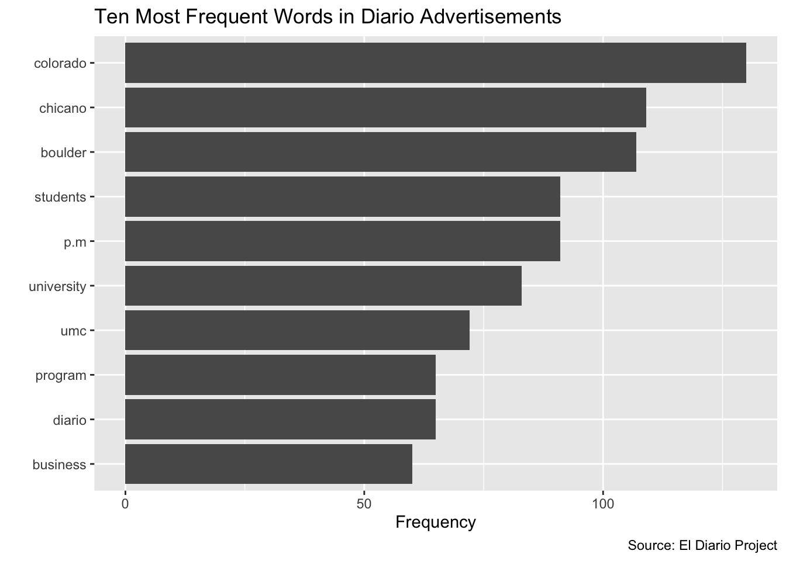

5 Visualizing Word Frequencies
# word frequencies
word_frequencies<-sort(rowSums(tdm_diario_adverts), decreasing=TRUE)# Make data frame
df_word_frequencies <- data.frame(word = names(word_frequencies),freq=word_frequencies)5.1 Creating a Chart of Word Frequencies
# ten most frequent words
df_ten<-df_word_frequencies %>%
slice_max(freq, n=10)diario_frequency_graph<-
ggplot(df_ten, aes(x=reorder(word, freq), y=freq))+
geom_bar(stat="identity")+
coord_flip()+
xlab("")+
ylab("Frequency")+
ggtitle("Ten Most Frequent Words in Diario Advertisements")+
labs(caption = "Source: El Diario Project")diario_frequency_graph
5.2 Creating a Word Cloud of Word Frequencies
# make word cloud
wordcloud2(data = df_word_frequencies, minRotation = 0, maxRotation = 0, ellipticity = 0.2)